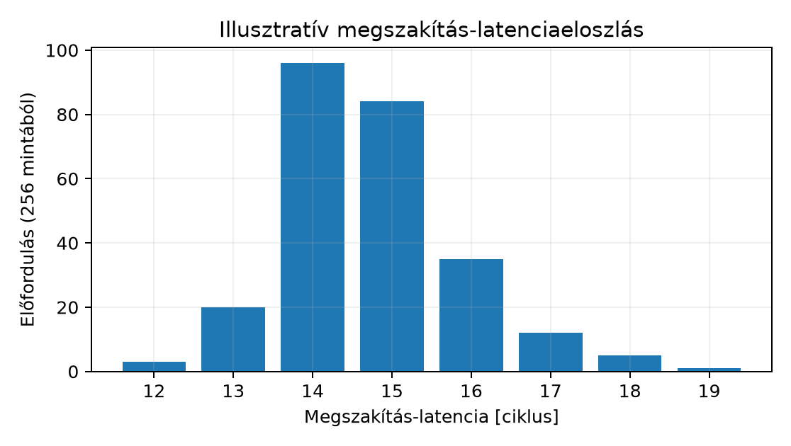

Egy 10 kHz-es mintavételű motorvezérlőben az enkóder minden ciklusban megszakítást kér. A szabályozási törvény futási ideje kötött, de a bemenet a megszakítás megérkezése és az ISR első utasítása közötti idővel késik. Ha ez a késés túllépi a maradék időt, a hurok fázisában instabillá válik, és a garantált válaszidő elvész. Mérnöki döntéshez két dolog kell: egy korlát, amely a rendszer dokumentált feltételeiből (tiltási intervallumok, prioritások, a mag időzítése) következik, és egy mért érték a konkrét rendszerből. Ez az alfejezet egy illusztratív költségmodellt és egy mérési módszert ad, és megmutatja, mi kell ahhoz, hogy a modellből valódi felső korlát legyen, és — ami legalább ilyen fontos — megmutatja, miért nem fordítható a QEMU-ban mért ciklusszám hardverhű garanciává. Az NVIC konfiguráció és az ISR írása már megadta a mechanizmust; itt az időbeli viselkedését számszerűsítjük.
Megszakítás-latencia (interrupt latency): az az eltelt idő, amely a megszakításkérés processzor számára láthatóvá válásától az ISR első utasításának végrehajtásáig telik el.
Két szintet különböztetünk meg, és a méréseket ehhez kell horgonyozni:
Az alábbi levezetés -t modellezi; a mérés a szoftverben látható -t (vagy annak GPIO-változatát) fogja rögzíteni, és a kettő közti különbséget kontrollkísérlettel választjuk szét.
A belépés egy rögzített sorrendű, de részben adatfüggő útvonalon halad. Rétegenként:
| # | Összetevő | Jelölés | Keletkezés | Tipikus ciklus |
|---|---|---|---|---|
| 1 | Kérés-asszertálás és szinkronizálás | periféria jele a processzor óratartományába | 1–2 | |
| 2 | Utasításhatár és pipeline-ürítés | az aktuális utasítás befejezése/eldobása | 0 – sok | |
| 3 | Automatikus context-mentés | 8 szó (–, , , , ) verembe írása | kb. 8 + wait state | |
| 4 | Vektorfetch | ISR-cím olvasása a vektortáblából | 1 + wait state | |
| 5 | Első utasítás fetch/dekód | pipeline feltöltése az ISR belépési pontján | kb. 2 | |
| 6 | Prioritás-arbitráció / preempciós várakozás | azonos vagy nagyobb prioritás fut, tail-chaining | esetfüggő |
A (3) lépés az automatikus context-mentés: a
hardver a caller-saved halmazt menti, ezért az egyszerű ISR
tisztán C-ben megírható. A (2) lépés a legváltozékonyabb, és a mag
dokumentációja szerint három esetet kell elkülöníteni.
Megszakítható–folytatható utasítás a Cortex-M3-on a
több szót mozgató LDM, STM, PUSH
és POP. Ha közben megszakítás érkezik, a mag az utasítást
félbehagyja, a haladást (a következő átviendő regiszter sorszámát) az
EPSR ICI (Interrupt-Continuable
Instruction) mezőjében menti, és a kivételből visszatérve onnan
folytatja. A latenciához tehát nem a teljes regiszterlista ideje adódik,
legfeljebb a már elindított egyetlen átvitel befejezése. Az ICI-mező
ugyanazokon az EPSR-biteken osztozik az IT-blokk
állapotával, ezért a kettő egyszerre nem lehet érvényes. Egy IT-blokkon
belüli LDM/STM nem folytatható: megszakításkor
eldobódik, és visszatérés után elölről kezdődik
(újrakezdhető eset). Valóban nem megszakítható a már
kiadott buszátvitel: egy lassú perifériára vagy wait state-es memóriára
induló olvasást vagy írást a mag kivárja. Ez a
valódi, memóriarendszertől függő része. A pontos szabályokat (például a
többciklusú osztás kezelését) a konkrét mag TRM-je rögzíti, ezért a
modellbe az adott mag szabálya kerüljön. A (6) lépésnél a tail-chaining
különleges. Ha a futó kezelő kilépésekor van olyan pending kivétel,
amely kiszolgálható (akár a futó ISR alatt, akár a kilépés közben vált
pendingé), a mag a vermet nem állítja vissza és nem menti újra, hanem
közvetlenül a következő kezelőbe lép. Ez a láncolt útvonal rövidebb,
mint egy Thread módból induló teljes belépés.
Az alábbi számolás illusztratív költségmodell, nem garantált felső korlát. Feltevései:
| Feltevés | A modellben | Ha nem teljesül |
|---|---|---|
| a kérés nincs maszkolva | nincs PRIMASK/BASEPRI-szakasz, nem fut
azonos vagy magasabb prioritású kezelő |
a teljes maszkolt, illetve foglalt idő hozzáadódik |
| nincs interferáló kivétel | a mérési ablakban nem érkezik magasabb prioritású kérés | minden ilyen kezelő teljes futásideje hozzáadódik |
| memóriarendszer | zéró-wait-state SRAM a veremnek és a vektortáblának | wait state-ek szavanként, buszkonfliktus |
| az összetevők additívak | a lenti tagok egyszerűen összeadódnak | a Cortex-M3-on a stacking (adatbusz) és a vektorlekérés (utasításbusz) átfedheti egymást, ezért a valós belépés rövidebb lehet a tagok összegénél |
| az éppen futó utasítás befejezése vagy eldobása | LDM/STM folytatható, nem a teljes listát
kell kivárni; egy elindított lassú buszátvitelt igen |
A modell tagjai ciklusban:
ahol a verem memóriájának wait state-száma szavanként, a vektortábla wait state-száma.
Illusztratív számokkal ():
A 29 ciklus a táblázat feltevései mellett szemléltet, nem garancia. Az, hogy a kedvező eset összege 12, egybeesik a Cortex-M3-ra dokumentált idealizált belépési idővel. Ez azonban nem igazolja a modellt, mert a tagok a valóságban részben átfedik egymást. A belépés saját idejét () a konkrét mag TRM-jéből és memóriarendszeréből kell venni.
Mi kell valódi felső korláthoz? A korlátnak a rendszer dokumentált körülményeiből kell következnie:
ahol
a leghosszabb olyan intervallum, amikor a kérés nem léphet be
(PRIMASK/BASEPRI-szakasz, vagy egy azonos vagy
magasabb prioritású kezelő futása),
a mérési ablakban beérkezhető magasabb prioritású kivételek halmaza,
a legnagyobb előfordulásuk,
a kezelőjük WCET-je,
a leghosszabb elindított, nem megszakítható buszátvitel. Egy 200
ciklusos PRIMASK-szakasz és egyetlen 150 ciklusos, magasabb
prioritású ISR esetén a korlát már több mint 350 ciklus. A 29 ciklus
ilyen környezetben nem érvényes. A korlát tagjait útvonalanként kell
meghatározni, ahogy az ISR-ek WCET-jét a Záróprojekt
II auditja is kezeli.
A latenciát két időbélyeg különbségeként mérjük. Időalapnak a trace
órajeléhez kötött ciklusszámlálót (DWT_CYCCNT) használjuk,
amelyet a DEMCR.TRCENA és a DWT_CTRL.CYCCNTENA
bit engedélyez (a részletekért lásd az egyszerű
instrumentáció mintáját). A mérés:
Fontos, hogy az ISR lehető legelső művelete legyen. A C-függvény első kifejezése előtt azonban a fordító prológust is generálhat; ez és az időbélyeg kiolvasása a mért érték része, ezért a disassemblyt is vizsgálni kell. ismétléssel hisztogramot építünk, mert egyetlen minta nem jellemzi a viselkedést.
Munkakönyvtár: ~/arm-labor/cm/a071/ —
az alfejezet minden laborfájlja ide kerül, és minden parancs innen
futtatandó (a könyvtárrendet a Labor-alapkörnyezet alfejezet írja le).
mkdir -p ~/arm-labor/cm/a071
cd ~/arm-labor/cm/a071A kód a memóriatérkép szerinti SCS-címeket
használja. A vektortábla külső IRQ6 bejegyzése a
lab_irq_isr kezelőre mutat; ezt a vonalat a
kontrollkísérlethez fenntartjuk.
A linker script és a startup a II. rész kanonikus párja (Linker script alapjai, Startup
kód), a vektortábla ellenőrzője pedig a Vektortábla alfejezet
lab-check-vectors.py-ja. A linker script változatlan; a
startup másolatának vektortábláját egyetlen, gépileg alkalmazható
lépéssel bővítjük a tesztvonal (IRQ6) bejegyzésével:
cp ~/arm-labor/cm/a065/lab-mps2.ld .
cp ~/arm-labor/cm/a066/lab-startup.s lab-a071-startup.s
cp ~/arm-labor/cm/a064/lab-check-vectors.py .
cat > lab-a071-irq.inc <<'EOF'
/* 16-tól: külső IRQ-k; a tesztvonal IRQ6 = 22. index, előtte 6 helyet ki kell tölteni */
.rept 6
.word Default_Handler /* 0x40-0x54: IRQ0-IRQ5 (itt nem használt) */
.endr
.word lab_irq_isr /* 0x58: IRQ6 (szoftveres NVIC-pending) */
EOF
sed -i '/\.word SysTick_Handler/r lab-a071-irq.inc' lab-a071-startup.s # a SysTick sor után
# gyenge alias: kezelő nélkül is linkelhető
echo ' lab_default_handler lab_irq_isr' >> lab-a071-startup.s
# ellenőrzés: a bővített tábla vége
sed -n '/\.word SysTick_Handler/,/^$/p' lab-a071-startup.sA sed mintája csak a vektortábla
.word SysTick_Handler sorára illeszkedik, a fájl végén lévő
lab_default_handler SysTick_Handler aliasra nem. A fel nem
használt IRQ-helyek a kanonikus Default_Handler-re
mutatnak. Az echo sor a kanonikus
lab_default_handler makróval a fájl végére egy
gyenge, Default_Handler-re mutató aliast
fűz a használt kezelőhöz is. A C-fájl erős definíciója ezt felülírja, de
ha egy build a kezelőt nem tartalmazza, a KEEP-pel
megtartott vektortábla hivatkozása akkor sem marad feloldatlan. Ezek
valódi táblaszavak, nem megjegyzések, mert csak így
kerül a használt kezelő a megfelelő indexre
().
A példa szoftveresen állítja pending állapotba az NVIC-et, így nem
feltételez GPIO-visszacsatolást. GPIO-éltől mért teljes latenciához
külön, valóban implementált periféria és dokumentált bekötés szükséges.
A QEMU 8.2.2 AN385 modellje nem implementálja a GPIO-t, és a DWT
számlálója sem halad; itt a mérés SKIP.
/* lab-a071-latency.c — szoftveres NVIC-pending latenciapróba (IRQ6),
* megfigyelhető PASS/FAIL/SKIP kimenettel (semihosting) */
#include <stdint.h>
#define REG32(a) (*(volatile uint32_t *)(uintptr_t)(a))
#define DEMCR REG32(0xE000EDFCu)
#define DWT_CTRL REG32(0xE0001000u)
#define DWT_CYCCNT REG32(0xE0001004u)
#define NVIC_ISER0 REG32(0xE000E100u)
#define NVIC_ISPR0 REG32(0xE000E200u)
#define TEST_IRQ 6u
#define N 256u
static volatile uint32_t t0, t1, done;
static volatile uint32_t hist[32], above_hist;
void lab_irq_isr(void)
{
t1 = DWT_CYCCNT;
uint32_t d = t1 - t0;
if (d < 32u) hist[d]++;
else above_hist++;
done++;
}
static void sh_call(uint32_t op, const void *arg)
{
register uint32_t r0 asm("r0") = op;
register const void *r1 asm("r1") = arg;
asm volatile ("bkpt 0xab" : "+r"(r0) : "r"(r1) : "memory");
}
_Noreturn static void finish(const char *line, int fail)
{
sh_call(0x04u, line); /* SYS_WRITE0 */
sh_call(0x18u, (const void *)(fail ? 0x20023u : 0x20026u)); /* SYS_EXIT */
for (;;) { }
}
/* Egyetlen szoftveres pending; 1, ha a kezelő a korláton belül lefutott. */
static int trigger_once(void)
{
uint32_t before = done;
t0 = DWT_CYCCNT;
NVIC_ISPR0 = 1u << TEST_IRQ;
__asm volatile("dsb\n\tisb" ::: "memory");
for (uint32_t limit = 1000000u; done == before && limit; --limit) { }
return done != before;
}
int main(void)
{
NVIC_ISER0 = 1u << TEST_IRQ;
/* 1. Funkcionális próba, a DWT-től függetlenül: eléri-e a kérés a kezelőt? */
if (!trigger_once())
finish("LATENCY: FAIL (az IRQ6 kérés nem érte el a lab_irq_isr-t)\n", 1);
/* 2. Halad-e a ciklusszámláló? Ha nem, mérni nem lehet: SKIP. */
DEMCR |= 1u << 24; /* TRCENA */
DWT_CYCCNT = 0;
DWT_CTRL |= 1u; /* CYCCNTENA */
__asm volatile("dsb\n\tisb" ::: "memory");
uint32_t before = DWT_CYCCNT;
for (unsigned i = 0; i < 64; ++i) __asm volatile("nop");
if (DWT_CYCCNT == before)
finish("LATENCY: SKIP (a DWT CYCCNT nem halad; az IRQ6 kiszolgálása működik)\n", 0);
/* 3. Mérés: N minta hisztogramba. */
for (unsigned k = 0; k < 32; ++k) hist[k] = 0;
above_hist = 0;
for (uint32_t i = 0; i < N; i++)
if (!trigger_once())
finish("LATENCY: FAIL (elmaradt megszakítás a mérés közben)\n", 1);
uint32_t sum = above_hist;
for (unsigned k = 0; k < 32; ++k) sum += hist[k];
if (sum != N)
finish("LATENCY: FAIL (hist + above_hist != 256)\n", 1);
finish("LATENCY: PASS (256 minta; a hist[] GDB-vel olvasható)\n", 0);
}Build, a vektortábla gépi ellenőrzése és futtatás (fájlok:
lab-mps2.ld, a fent bővített
lab-a071-startup.s, lab-a071-latency.c,
lab-check-vectors.py):
arm-none-eabi-gcc -mcpu=cortex-m3 -mthumb -nostdlib -ffreestanding \
-T lab-mps2.ld lab-a071-startup.s lab-a071-latency.c -o lab-a071.elf
python3 lab-check-vectors.py lab-a071.elf 1=Reset_Handler 22=lab_irq_isr
timeout 20 qemu-system-arm -machine mps2-an385 -cpu cortex-m3 -nographic -semihosting \
-kernel lab-a071.elf; echo "kilépési állapot: $?"A labor szoftveres pending-próba: a kérést az
NVIC_ISPR0 írása adja, periféria nélkül. A GPIO-éltől mért
teljes latencia külön, hardveres kiterjesztés, amelyhez valóban
implementált GPIO és dokumentált bekötés kell; a QEMU 8.2.2 AN385
modelljében ez nem érhető el.
A program három kimenetet ad, mindegyiket semihostingos kiírással és szabályos kilépéssel:
| Eredmény | Feltétel | Kilépési állapot |
|---|---|---|
LATENCY: FAIL (az IRQ6 kérés nem érte el a lab_irq_isr-t) |
a funkcionális próba sikertelen: az IRQ nincs engedélyezve, vagy a kezelő nem fut le a korláton belül | 1 |
LATENCY: SKIP (a DWT CYCCNT nem halad; …) |
a kezelés működik, de a ciklusszámláló nem halad, ezért mérni nem lehet | 0 |
LATENCY: PASS (256 minta; …) |
működő DWT, 256 minta, hist + above_hist = 256 |
0 |
A funkcionális próba a DWT-től függetlenül fut, ezért a hiba és a
mérhetetlenség nem keveredik össze. Ha a vektor rossz helyre mutat, és a
kérés a Default_Handler végtelen ciklusába fut, a program
nem jut el a kiírásig. Ezt a futtatóparancs timeout-ja
jelzi 124-es állapottal, a lab-check-vectors.py pedig már
futtatás előtt kiszűri. A done várakozása elkülöníti a
mintákat; az egymillió iterációs korlát hiányzó megszakításnál
megakadályozza a beragadást.
Eseménysorrend és a mért metrika. A
trigger_once mintáiban az események sorrendje rögzített:
(1) Thread módban kiolvassuk a
-t;
(2) az NVIC_ISPR0 írása után az IRQ6
pending; (3) a mag kiszolgálja a kérést, és belép a
lab_irq_isr-be; (4) a kezelő első mérőpontja kiolvassa a
-et.
A
tehát egy Thread módból indított szoftverművelet
válaszideje: benne van a
kiolvasása utáni utasítások, az NVIC_ISPR0-írás
buszátvitele és maga a belépés. Egyetlen magon a Thread-kód nem fut,
amíg egy kezelő aktív. Ezért egy magasabb prioritású kezelő (például egy
hosszú SysTick) csak két helyen növelheti ezt az
intervallumot: ha a kivétel az (1) és a (2) közé ékelődik, vagy ha a (2)
és a (3) között vele egy időben pending, és nagyobb prioritása miatt
előbb kap sorra. A Thread-trigger tehát nem érkezhet
egy már futó kezelő belsejébe, és egy aktív ISR hátralévő idejének
eloszlását sem méri. Ehhez a kérést a kezelő ismert pontján kell kiadni,
ahogy a 2. feladat kontrollált változata teszi.
A helyettesítő eszközlánccal (Clang + ld.lld) épített
lab-a071.elf a tools/cm-run.py emulátorban,
amelyben a DWT a QEMU 8.2.2-höz hasonlóan nem halad, ezt adta:
LATENCY: SKIP (a DWT CYCCNT nem halad; az IRQ6 kiszolgálása működik)
kilépési állapot: 0Ellenpróbaként az NVIC_ISER0 írását kihagyva
LATENCY: FAIL (az IRQ6 kérés nem érte el a lab_irq_isr-t)
és 1-es állapot, a 22. vektort Default_Handler-re cserélve
az emulátor időkorlátja (124) volt az eredmény.
Működő DWT mellett a hist[] tömböt GDB-vel olvassuk ki.
Illusztratív, levezetett eloszlás:
| Latencia [ciklus] | 12 | 13 | 14 | 15 | 16 | 17 | 18 | 19 |
|---|---|---|---|---|---|---|---|---|
| Előfordulás | 3 | 20 | 96 | 84 | 35 | 12 | 5 | 1 |

Működő DWT esetén az ellenőrzés:
.
A above_hist a 31 ciklusnál nagyobb mintákat is megőrzi
darabszámként. A fenti számszerű eloszlás hipotetikus szemléltetés; sem
az NVIC-kontroll, sem a GPIO-mérés tényleges eredményét nem állítja.
A QEMU alapértelmezésben funkcionális emulátor, nem
ciklusponos szimulátor. A QEMU 8.2.2 AN385 modelljében a
DWT_CYCCNT nem növekszik, ezért itt érvényes
ciklusszámmérés sincs. Más verzión előbb a számláló működését kell
ellenőrizni; a működő emulált számláló sem bizonyít cikluspontos
pipeline-modellt. -icount módban a virtuális óra
determinisztikussá tehető, de a modell továbbra sem reprodukálja a
busz-várakozási állapotokat, a flash-prefetch viselkedést, a soros
hozzáférési konfliktusokat és a valódi pipeline-stallokat.
Következmények:
CYCCNT mindig 0. Hipotézis: nem
állítottuk a DEMCR.TRCENA-t vagy a
DWT_CTRL.CYCCNTENA-t, vagy a QEMU nem modellezi.
Adatgyűjtés: GDB-vel olvassuk ki a regisztereket. Egy változtatás:
engedélyezzük a biteket; ha így sem nő, a modell a korlát.GPIO_INTCLEAR) elmaradt (l. a070).
A szoftveres pending-próbában ez nem fordulhat elő, mert ott nincs
periféria-forrás. Ellenpróba: a kezelő a visszatérés előtt törölje a
forrás jelzőjét.NVIC_ISPR0
pending, mint az alaplaborban. A két eloszlás különbsége izolálja a
periféria-asszertálást
().LDM teljes ideje kerül a
-be.SysTick
ISR-rel, amely ismert mennyiségű munkát végez. A kérést most ne
Thread módból adja ki: a SysTick kezelő a munkája
25, 50, illetve 75%-ánál rögzítse a
-t,
és ott pendingelje az alacsonyabb prioritású IRQ6-ot. Igazolja a
jegyzőkönyvben a
,
a pendinggé válás és az IRQ6 első mérőpontjának sorrendjét, mérje meg
(működő DWT mellett) a késést a három ponton, és vesse össze a hátralevő
munkával, valamint a korlátképlet
tagjával.1. megoldás — Segítség. Nézd meg, mely összetevők függenek az ÉPPEN futó utasítástól vagy az ÉPPEN futó másik kezelőtől, és melyek csak a core felépítésétől.
1. megoldás — Teljes megoldás. Konstans jellegű:
és
adott core-on nagyjából állandó. Változó:
az aktuális utasítástól függ,
/
a memória wait state-jeitől,
a futó kezelőtől. A
azért kiszámíthatatlan, mert a megszakítás bármely utasítás közben
érkezhet; a
azért, mert a tail-chaining és a preempció időzítésfüggő. Egy
LDM/STM nem a teljes regiszterlista idejével
növeli a
-t,
mert a Cortex-M3 félbehagyja, a haladást az EPSR
ICI-mezőjében menti, és a visszatérés után folytatja. Csak az éppen
elindított átvitelt kell kivárni. IT-blokkon belül nincs ICI, mert az
IT-állapot ugyanazokat a biteket használja: ott az utasítás eldobódik,
és elölről kezdődik.
2. megoldás — Segítség. Amíg a magasabb prioritású
ISR fut, az IRQ6-kérés nem léphet be. Ha a kérést a SysTick
kezelő maga adja ki egy ismert ponton, mennyi munka van még hátra a
belépésig? És miért nem lehet ugyanezt a Thread módból indított
trigger_once-szal előállítani?
2. megoldás — Teljes megoldás. A Thread módból
indított trigger_once erre a kérdésre nem alkalmas. Amíg a
SysTick fut, a Thread-kód áll, így a kérés nem eshet a
kezelő „véletlen pontjára”. A hosszú SysTick legfeljebb a
és az ISPR-írás közé, vagy a pending és a belépés közé
ékelődik (lásd a Kidolgozott példa eseménysorrendjét), és akkor a mért
érték nem a hátralévő ISR-idő. A kontrollált változatban ezért a
kérést a magasabb prioritású kezelő adja ki, egy ismert
ponton. A SysTick (nyers prioritás 0x20)
WORK = 400 munkaegységet végez; a
req_point-adik egységnél rögzíti a
-t,
és az NVIC_ISPR0-val pendingeli az IRQ6-ot (nyers prioritás
0x80). Az IRQ6 a SysTick alatt pending marad,
és csak annak kilépésekor, láncolva lép be. A SysTick-et a
főprogram az ICSR.PENDSTSET bittel indítja, így a kezelő
futásának kezdete is a programhoz kötött:
/* lab-a071-systick.c — kontrollált preempciós próba (2. feladat): az IRQ6-kérést
* a magasabb prioritású SysTick kezelő ismert pontján adjuk ki */
#include <stdint.h>
#define REG32(a) (*(volatile uint32_t *)(uintptr_t)(a))
#define DEMCR REG32(0xE000EDFCu)
#define DWT_CTRL REG32(0xE0001000u)
#define DWT_CYCCNT REG32(0xE0001004u)
#define NVIC_ISER0 REG32(0xE000E100u)
#define NVIC_ISPR0 REG32(0xE000E200u)
#define NVIC_IPR1 REG32(0xE000E404u) /* IRQ4..IRQ7 prioritásbájtjai */
#define SCB_ICSR REG32(0xE000ED04u) /* bit 26: PENDSTSET */
#define SCB_SHPR3 REG32(0xE000ED20u) /* bit 31:24: a SysTick prioritása */
#define TEST_IRQ 6u
#define WORK 400u /* a SysTick kezelő munkaegységei */
static volatile uint32_t work, req_at, entry_at, t0, t1, done, req_point;
void SysTick_Handler(void) /* nyers prioritás 0x20: magasabb */
{
for (uint32_t i = 0; i < WORK; i++) {
if (i == req_point) { /* ismert pont: időbélyeg, kérés */
req_at = work;
t0 = DWT_CYCCNT;
NVIC_ISPR0 = 1u << TEST_IRQ; /* alacsonyabb prioritás: pending */
}
work++; /* egy munkaegység */
}
}
void lab_irq_isr(void) /* IRQ6, nyers prioritás 0x80 */
{
t1 = DWT_CYCCNT;
entry_at = work;
done++;
}
static void sh_call(uint32_t op, const void *arg)
{
register uint32_t r0 asm("r0") = op;
register const void *r1 asm("r1") = arg;
asm volatile ("bkpt 0xab" : "+r"(r0) : "r"(r1) : "memory");
}
static void put(const char *s) { sh_call(0x04u, s); } /* SYS_WRITE0 */
static void put_u32(uint32_t v)
{
char buf[11], *p = buf + sizeof buf - 1;
*p = '\0';
do { *--p = (char)('0' + v % 10u); v /= 10u; } while (v);
put(p);
}
_Noreturn static void finish(const char *line, int fail)
{
put(line);
sh_call(0x18u, (const void *)(fail ? 0x20023u : 0x20026u)); /* SYS_EXIT */
for (;;) { }
}
int main(void)
{
SCB_SHPR3 = (SCB_SHPR3 & 0x00FFFFFFu) | (0x20u << 24);
NVIC_IPR1 = (NVIC_IPR1 & ~(0xFFu << 16)) | (0x80u << 16); /* IRQ6: bit 23:16 */
NVIC_ISER0 = 1u << TEST_IRQ;
DEMCR |= 1u << 24; /* TRCENA */
DWT_CYCCNT = 0;
DWT_CTRL |= 1u; /* CYCCNTENA */
__asm volatile("dsb\n\tisb" ::: "memory");
uint32_t c0 = DWT_CYCCNT;
for (unsigned i = 0; i < 64; ++i) __asm volatile("nop");
int dwt = DWT_CYCCNT != c0;
static const uint32_t pct[3] = { 25u, 50u, 75u };
uint32_t lat[3];
for (unsigned k = 0; k < 3; k++) {
req_point = pct[k] * WORK / 100u;
work = 0;
uint32_t before = done;
SCB_ICSR = 1u << 26; /* SysTick szoftveres pendingelése */
__asm volatile("dsb\n\tisb" ::: "memory");
for (uint32_t limit = 1000000u; done == before && limit; --limit) { }
if (done == before)
finish("PREEMPT: FAIL (az IRQ6 nem futott le)\n", 1);
/* Sorrend: t0 és a kérés a SysTick-ben, belépés csak a SysTick után. */
if (entry_at != WORK || req_at != req_point)
finish("PREEMPT: FAIL (az IRQ6 a SysTick vége előtt lépett be)\n", 1);
lat[k] = t1 - t0;
put("p = ");
put_u32(pct[k]);
put("%: hátralevő munka = ");
put_u32(entry_at - req_at);
put(" egység, t1 - t0 = ");
if (dwt) { put_u32(lat[k]); put(" ciklus\n"); }
else put("SKIP (a DWT CYCCNT nem halad)\n");
}
if (!dwt)
finish("PREEMPT: PASS (sorrend), késés: SKIP (a DWT CYCCNT nem halad)\n", 0);
if (!(lat[0] > lat[1] && lat[1] > lat[2]))
finish("PREEMPT: FAIL (a késés nem csökken a hátralevő munkával)\n", 1);
finish("PREEMPT: PASS (sorrend és csökkenő késés)\n", 0);
}arm-none-eabi-gcc -mcpu=cortex-m3 -mthumb -nostdlib -ffreestanding \
-T lab-mps2.ld lab-a071-startup.s lab-a071-systick.c -o lab-a071-systick.elf
python3 lab-check-vectors.py lab-a071-systick.elf \
1=Reset_Handler 15=SysTick_Handler 22=lab_irq_isr
timeout 20 qemu-system-arm -machine mps2-an385 -cpu cortex-m3 -nographic -semihosting \
-kernel lab-a071-systick.elf; echo "kilépési állapot: $?"A SysTick_Handler a kanonikus startupban gyenge alias,
ezért a C-fájl erős definíciója kerül a 15. vektorba; a
lab-a071-startup.s változatlanul az alaplaboré. A
sorrendet a program a DWT-től függetlenül ellenőrzi: a
kérés pillanatában a req_at a kérési pontot rögzíti, a
belépéskor az entry_at pedig a teljes WORK-öt.
Ha az IRQ6 a SysTick vége előtt lépne be (például mert a
prioritása magasabb lett), PREEMPT: FAIL a kimenet. A
sorrend tehát:
→ pending (a kezelőn belül) → a SysTick hátralevő
WORK
egysége → kilépés és láncolt belépés →
.
A helyettesítő eszközlánccal (Clang + ld.lld,
-O0 és -O2) épített ELF a
tools/cm-run.py emulátorban, amely a
SysTick-et csak szoftveres pendingként
(ICSR.PENDSTSET, SHPR3) modellezi, és amelyben
a DWT nem halad, ezt adta:
p = 25%: hátralevő munka = 300 egység, t1 - t0 = SKIP (a DWT CYCCNT nem halad)
p = 50%: hátralevő munka = 200 egység, t1 - t0 = SKIP (a DWT CYCCNT nem halad)
p = 75%: hátralevő munka = 100 egység, t1 - t0 = SKIP (a DWT CYCCNT nem halad)
PREEMPT: PASS (sorrend), késés: SKIP (a DWT CYCCNT nem halad)
kilépési állapot: 0Ellenpróbaként az IRQ6 nyers prioritását 0x00-ra (a
SysTick-nél magasabbra) állítva a kimenet
PREEMPT: FAIL (az IRQ6 a SysTick vége előtt lépett be),
1-es állapottal: ilyenkor a kérés azonnal preemptál.
Működő DWT mellett a
a hátralevő munkával arányosan csökken, ezt a program a 25 → 50 → 75%-os
pontok szigorúan csökkenő késéseként ellenőrzi. Közelítőleg
,
ahol
a kezelő teljes munkarészének futásideje. A legnagyobb érték
esetén a teljes
-hez
közelít: ez a korlátképlet
tagja,
-gyel.
A mérés tehát azt mutatja meg, hogy a 29 ciklusos illusztratív modell
ilyen környezetben nem korlát. A tényleges ciklusszámokat a fenti
futásban nem mértük (a DWT nem halad), ezért itt csak a sorrend és a
hátralevő munka igazolt. Egy aszinkron, a Thread-kódtól független forrás
(például egy timer, amely a SysTick-kel nem szinkron)
véletlen érkezést ad. Ott a kérés a futó kezelő bármely pontjára eshet,
és a késés eloszlása a hátralevő idő eloszlását követi. A
-t
ekkor a forrás eseményéhez kell kötni (például a timer számlálójából
visszaszámolva), nem egy Thread-időbélyeghez.
3. megoldás — Segítség. A három szám önmagában nem dönti el az okot. Milyen körülmény hozna létre biztosan láncolt belépést, és milyen biztosan láncolás nélkülit? Melyik kezelő kilépésekor kell a másik kérésnek már pendingnek lennie?
3. megoldás — Teljes megoldás. Lehetséges
hipotézisek: (a) eltérő
,
mert a trigger utáni utasítás (például a várakozó ciklus
ldr-je vagy egy elindított buszátvitel) más-más ponton van;
(b) wait state-ek vagy buszkonfliktus a stacking és a vektorlekérés
alatt; (c) a mérési kód változékonysága (a t0 olvasása és
az ISPR-írás sorrendje, a kezelő prológusa); (d) láncolt
belépés. A (d) csak akkor lehetséges, ha a mért kérés egy
másik kezelő kilépésekor már pending. Az alappróbában
ez nem áll fenn: egyetlen IRQ indul Thread módból, és a főciklus
megvárja a kiszolgálását. Kontrollkísérlet két IRQ-val (például IRQ5 és
IRQ6, azonos csoportprioritással, hogy egymást ne preemptálják).
Láncolásos út: az IRQ5 kezelője a visszatérése előtt
NVIC_ISPR0-val pendingbe teszi az IRQ6-ot, és rögzíti a
saját kilépési időbélyegét. Az IRQ6 így a kilépéskor kiszolgálható
pending kivétel, és láncolva lép be. Láncolás nélküli
út: az IRQ6-ot a főciklus pendingeli Thread módból, mint az
alappróbában. A két út latenciáját ugyanazzal a módszerrel, külön
hisztogramba mérjük. Ha a láncolásos út eloszlása egy meglévő csúcsra
esik, a láncolás nélküli pedig nem, az a (d) hipotézist támogatja; ha a
két út eloszlása azonos, a csúcsokat más ok (a)–(c) adja. A csúcsot
tehát a kísérleti út, nem a viszonylagos értéke azonosítja.
A megszakítás-latencia hat összetevőre bontható:
kérés-szinkronizálás, pipeline-ürítés, automatikus context-mentés (8
szó), vektorfetch és az első utasítás betöltése, valamint
prioritás-arbitráció; ezek összege adja a worst-case korlátot. A mérés
két időbélyeg (trigger előtti
és ISR-belépési
)
különbsége DWT_CYCCNT-vel, hisztogramként kiértékelve. A
QEMU-érték relatív összehasonlításra jó, hardverhű garanciára nem.
Továbbhasznált definíciók:
A linkek és a dokumentumverziók közös állapota az Olvasói útmutató forrásállapot-táblájában van; itt csak az alfejezet saját megállapításai szerepelnek.
EXC_RETURN, a
tail-chaining és a prioritás-arbitráció. Ellenőrizve: a link él
(a developer.arm.com → support.arm.com
átirányítás megerősített); a fejezetszám és a kiadásbetű az Arm-oldalak
közös korlátja miatt nem ellenőrzött.mps2-an385 machine, az
-icount mód és a modell korlátjai. Tartalmilag
ellenőrizve (a user-mode fejezeten keresztül), de
verzió-megjegyzéssel: a master ág dokumentációja (közös
verziókorlát); a hivatalos szöveg nem dokumentálja a cache-hierarchia
vagy a busz-várakozási állapotok modellezését, ezért a fejezet
QEMU-korlátra vonatkozó állításai a TCG ismert, funkcionális (nem
cikluspontos) tervezéséből következnek.A laborkönyvtár összeállítását a helyettesítő eszközlánccal (Clang +
ld.lld) ellenőriztük: egy üres könyvtárban, kizárólag a Vektortábla, a Linker script
alapjai, a Startup kód és ennek az
alfejezetnek a fájljaiból, a fenti
cp/cat/sed lépésekkel a labor
fordul és linkelődik, és a lab-check-vectors.py a Reset- és
a használt IRQ-bejegyzést is a várt szimbólumra mutatónak találja.
Ellenőrzési hiányok, amelyek a fenti ellenőrzés után is
ténylegesen fennmaradnak: (1) a Cortex-M3 pontos belépési
latenciája és a 12 ciklusú referenciaérték a konkrét core-revízióból
ellenőrizendő; (2) az mps2-an385
DWT_CYCCNT-támogatása és órafrekvenciája QEMU-verziófüggő;
(3) a GPIO0 IRQ-száma és loopback viselkedése a machine definíciótól
függ; (4) minden itteni ciklusszám levezetett/illusztratív, nem
tényleges mérés; (5) a 2. megoldás kontrollált
SysTick-próbájából csak a sorrend és a hátralevő munka mért
(a cm-run.py 1.2 a SysTick-et szoftveres
pendingként modellezi), a késések csökkenését működő DWT-vel, hardveren
kell igazolni.